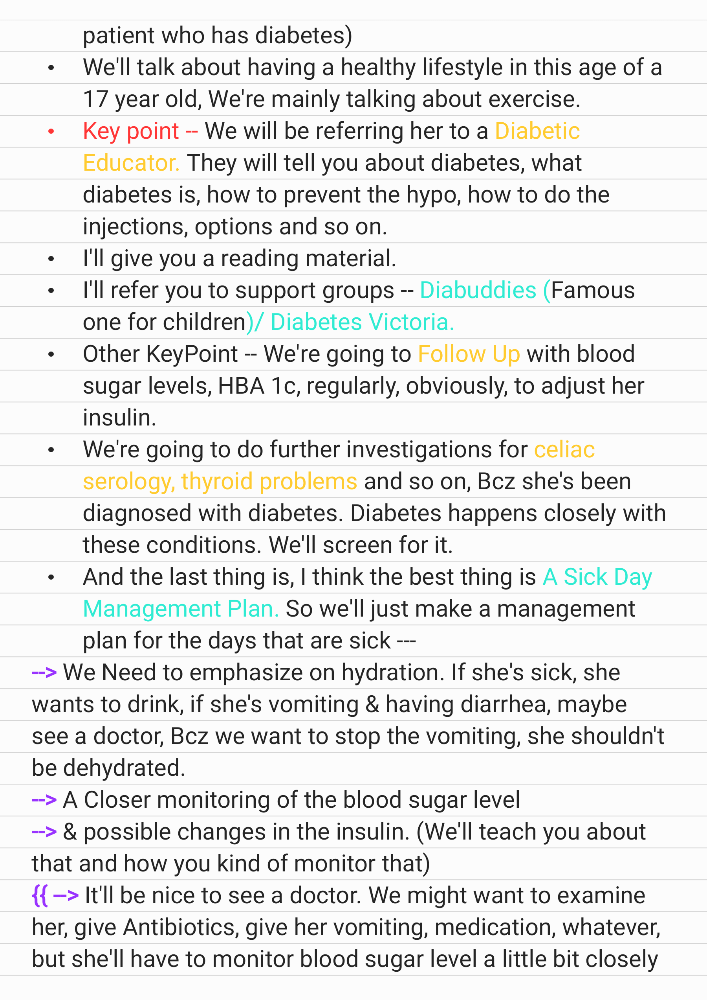

Source: Dr. Amir workshop — Med workshop 2 - 2026 / CLASS 5 UNWELL (Aug 2026 drop) · Specialty: general_practice
A 17-year-old girl brought to a rural emergency department by her parents, diagnosed with diabetic ketoacidosis (DKA) as the first presentation of type 1 diabetes. She had been unwell for two weeks with polydipsia and weight loss, then collapsed on the farm. Tasks: explain the investigations, explain the diagnosis, explain immediate management, and outline long-term management of type 1 diabetes. The rural setting (approximately 400 km / 4 hours from a tertiary centre) is a deliberate design point affecting monitoring and transfer.
Biochemical triad for DKA (paediatric/RCH): hyperglycaemia (BGL >11 mmol/L), acidosis (venous pH <7.3 or bicarbonate <15 mmol/L), and ketosis (blood ketones >=3 mmol/L or ketonuria).
Sit down, build rapport, and ask the parent to summarise events first ('Can you tell me what has happened so far?'). Address the concern, then explain in a logical sequence:
The condition is diabetic ketoacidosis, a complication of diabetes. Her body is not producing enough insulin (the hormone that lowers blood sugar), so the sugar rises very high and the body produces ketones. Reasons for the diagnosis: her symptoms (tiredness, increased urination, fainting) and the investigations. A hyperglycaemic emergency like this confirms a diagnosis of type 1 diabetes.
Cerebral injury/oedema is the key life-threatening complication, usually developing within the first 12 hours; early signs include headache, irritability, lethargy and vomiting after therapy starts, progressing to depressed consciousness and, late, bradycardia and rising blood pressure. If suspected, discuss immediately with a senior. Children have depleted total-body potassium regardless of the initial serum level.
Rural context: per RCH guidance, consult the paediatric team for all children with DKA and all newly diagnosed diabetes, and consider transfer when intensive monitoring is needed (age <2 years, coma, cardiovascular compromise, seizures, signs of cerebral oedema, or severe acidosis with pH <7.1 or HCO3 <5). Because close hourly biochemical monitoring is difficult rurally, stabilise locally then transfer to a tertiary centre.
Pharmacological: discharge on insulin - multiple daily injections or an insulin pump.
Non-pharmacological: dietitian referral; healthy lifestyle and exercise advice; referral to a diabetes educator (what diabetes is, injection technique, preventing hypoglycaemia); written information; support groups (e.g. Diabetes Australia). Regular follow-up with BGL and HbA1c to adjust insulin. Because type 1 diabetes is autoimmune, screen for associated conditions (coeliac serology, thyroid autoimmunity, diabetes autoantibodies). Provide a sick-day management plan emphasising hydration, closer glucose monitoring, adjusting insulin, and seeking review if vomiting/unable to maintain intake.

Reviewed by: history-taking-expert (Australian clinical supervisor) · fact-checked against the irStudy medical textbook RAG index.